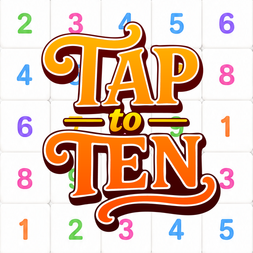
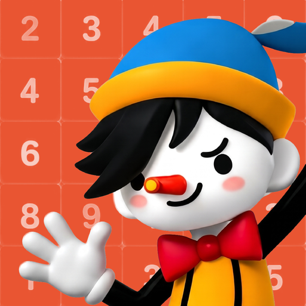
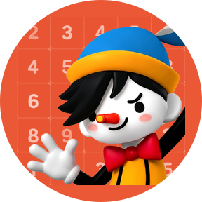
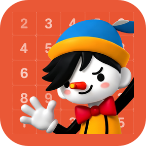

TAPtoTEN — 반응형 화면·밀도 보정·새 아이콘
고정 390×844 전체 축소 → 실제 가용 화면 반응형. 서체·기준 글자 크기·흰/회색 바탕과 기존 컬러 강조·규칙·기록은 유지.
모의검사와 실기기는 다릅니다. 여기서는 macOS Chrome에서 Android 화면 계산·밀도·안전영역을 모의했다. 실제 Galaxy/Android WebView 연결 기기는 없었어. AAB·버전 변경·commit/push는 하지 않았어. 전후는 같은 브라우저/시계/난수 조건의 780×1688 원본이며, 이전 버전은 git archive로 별도 재현했다.
스토어 이미지 7장 다운로드 · 연구 설명·실패 기록 · 최종 검증 치수/해시
전체 모의검사 통과 · 전후 62장 · 화면 비율9개 · 동일 기기 밀도5단계 · 실행중 변경8조건 · 웹 비교7비율 · 터치/변환/저장93항목. 단위 테스트241개·프로덕션 웹 빌드 통과. 실제 Android 기기는 미검증.
아이콘

이전

새 스토어 512×512

원형 launcher 모의

둥근 사각 launcher 모의
전체 화면
왼쪽: 1.0.5/code7의 고정 비율 소스 재현. 오른쪽: 현재 가용 화면 반응형. 둘 다 Android 계산을 모의하고 위24/아래48px 안전영역을 주었어. 검은 띠는 OS 시스템바 그림이 아니라 비어 있는 모의 안전영역이야. 결과·리액션 비교는 표시용 fixture, 스토어 GOOD TRY는 실제 플레이 결과야.